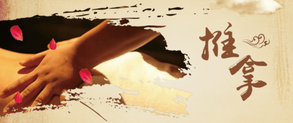
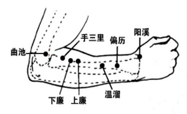

返回
推拿处方
欢迎，昵称
当前成员： 小明


推拿：尤其适用于身体出现四肢及颈、肩背疼痛不适的情况使用。
建议您在左上肢外侧前缘（手阳明大肠经）使用推拿手法进行调理。

【操作】顺经络循行方向，从手部往上肢，进行敲打。并配合点按循经穴位，循经穴位如图所示。

【注意事项】
（1）急性损伤性疾病、传染性疾病、出血性疾病者禁用。
（2）烫伤与溃疡性皮炎的局部禁用。
（3）年老体虚，久病体虚，或过饥过饱，酒醉后均不宜用过重手法推拿。
（4）孕妇慎用。